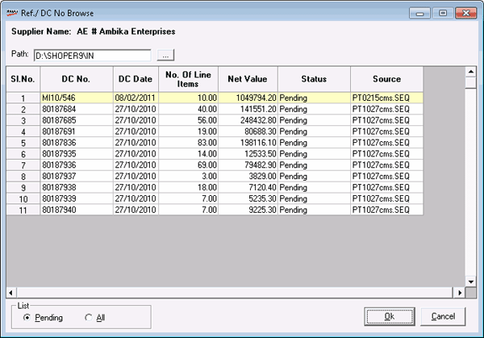

This browse displays the reference/ DC number of the documents received against a specific supplier.

Supplier Name: Displays the name of the supplier selected in the goods inward entry.
Path: Enter the path to the file containing the DCs or click  to browse for file. By default, the path defined in the system parameter Shoper IN Files Path is selected.
to browse for file. By default, the path defined in the system parameter Shoper IN Files Path is selected.
The details in the selected file is displayed in the grid.
List
Pending: Lists all the pending DCs in the file. This is the default.
All: Lists both pending and loaded DCs from the file.
Select a DC by highlighting it or by double clicking on that line.